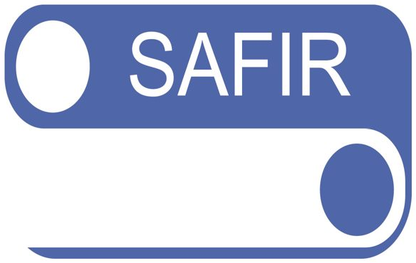
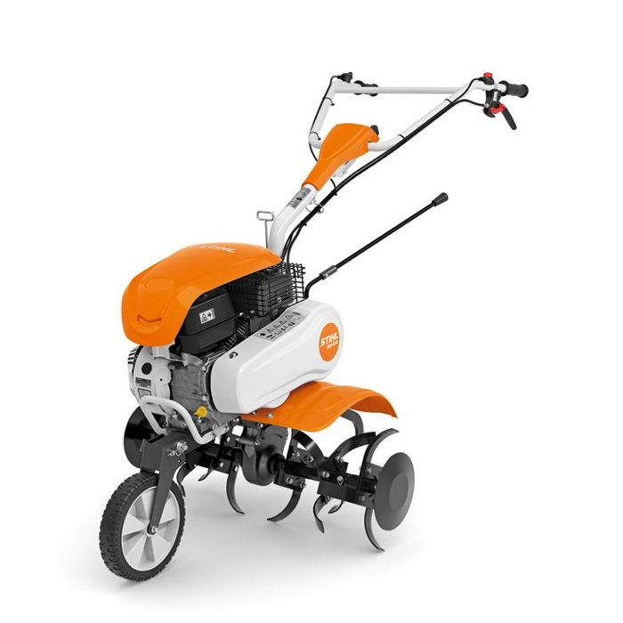
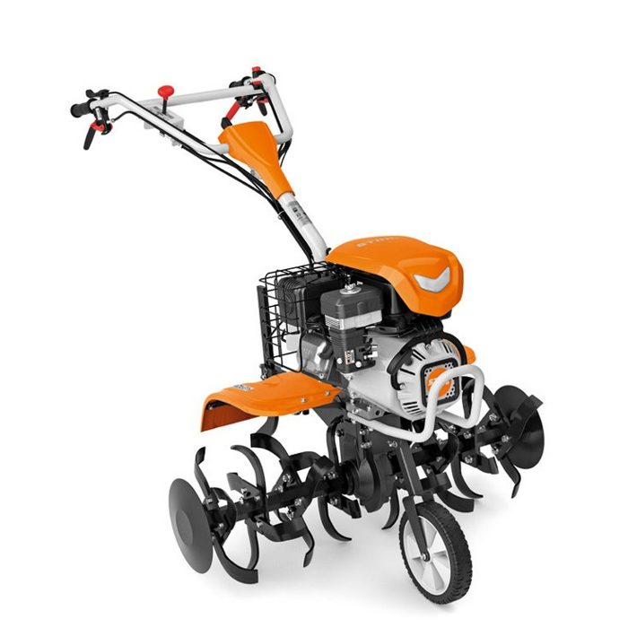
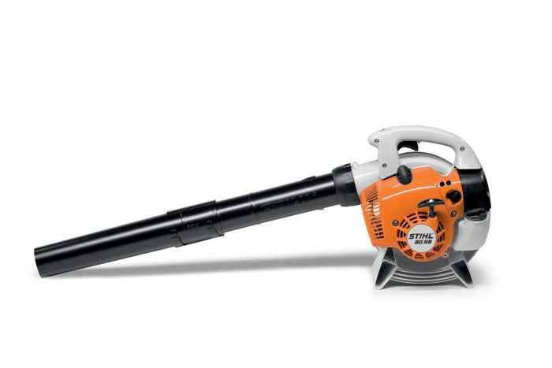
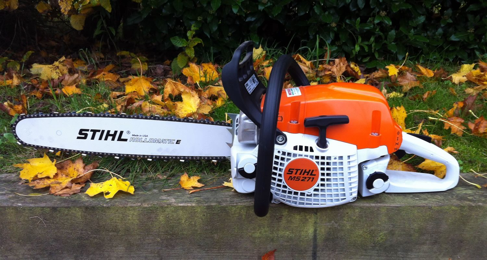

Depuis 1985
SACRI
Matériels industriels et agricoles, représentant exclusif STIHL, pièces de rechange et service après-vente.
Matériels forestiers, agricoles et industriels, pièces de rechange et service après-vente. Un groupe de cinq sociétés, installé à Abidjan depuis 1985.
Fourniture industrielle, transmission, pneumatique et hydraulique, outils de coupe, construction métallique.
Matériels industriels et agricoles, représentant exclusif STIHL, pièces de rechange et service après-vente.
Fourniture industrielle pour la transmission et les flexibles, conseil selon vos impératifs mécaniques et électriques.
Matériels pneumatiques et hydrauliques : réparation, installation, maintenance et SAV.

Scies à ruban, outils de coupe, affûtage et pièces pour les industries du bois.
Construction métallique, tuyauterie et chaudronnerie, de l'étude à la maintenance.









Atomiseurs, tarières, tronçonneuses, récolteuses
Débroussailleuses, élagueuses, souffleurs, tondeuses, couteaux à saigner et à greffer
Aspirateurs, nettoyeurs, aspiro-broyeurs
Sangles plates et rondes, sangles d'arrimage, câbles acier
Tuyaux d'aspiration et de refoulement, flexibles hydrauliques, raccords, croisillons
Huiles moteur, hydrauliques, boîte et pont, transmission automatique, additifs
Clés à choc, caisses à outils, clés de serrage, marteaux
Casques, gilets, chaussures, gants, masques, lunettes, harnais antichute
Compresseurs, groupes électrogènes, mâts d'éclairage, crics, palans, presses
Tous matériels, sur demande

Installée en Côte d'Ivoire depuis 1985, SACRI accompagne l'exploitation forestière et agricole du pays, des entreprises comme des particuliers.
La démarche qualité est l'axe majeur de la stratégie de développement de SACRI.

« Notre vocation est de satisfaire de façon totale et durable les besoins de nos clients et parties intéressées. »Nabil AJAMI, Directeur Général
Votre message est prêt. Envoyez-le à l'équipe commerciale.